应用持久化
目标
- k8s Volume 使用场景
- PVC/PV/StorageClass 基本操作和概念呢解析
- PVC/PV 设计与实现原理
存储基本概念介绍
术语表
| 术语 | 描述 | 简称 |
|---|---|---|
| Volumes | 存储卷 | V |
| Pod Volumes | Pod存储卷 | PV |
| Persistent Volumes | 持久化卷 | PV |
| PersistentVolumeClaim | 持久化存储卷申明 | PVC |
| in-tree | 网络存储实现的代码在k8s仓库中 | in-tree |
| out-of-tree | 网络存储实现, 通过从抽象接口将不通的存储 driver实现从k8s代码仓库中玻璃 |
out-of-tree |
| container storage interface | K8s社区后面对存储插件实现(out of tree)的官方推荐方式 | CSI |
持久化存储的业务场景
- 如果 pod 中的某一个容器在运行时异常退出，被 kubelet 重新拉起之后，如何保证之前容器产生的重要数据没有丢失？
- 如果同一个 pod 中的多个容器想要共享数据，应该如何去做？
Pod Volumes 的三种类型：
- 本地存储，常用的有 emptydir/hostpath；
- 网络存储：网络存储当前的实现方式有两种，一种是 in-tree，它的实现的代码是放在 K8s 代码仓库中的，随着k8s对存储类型支持的增多，这种方式会给k8s本身的维护和发展带来很大的负担；而第二种实现方式是 out-of-tree，它的实现其实是给 K8s 本身解耦的，通过抽象接口将不同存储的driver实现从k8s代码仓库中剥离，因此out-of-tree 是后面社区主推的一种实现网络存储插件的方式；
- Projected Volumes：它其实是将一些配置信息，如 secret/configmap 用卷的形式挂载在容器中，让容器中的程序可以通过POSIX接口来访问配置数据；
Pod Volumes 存在的问题
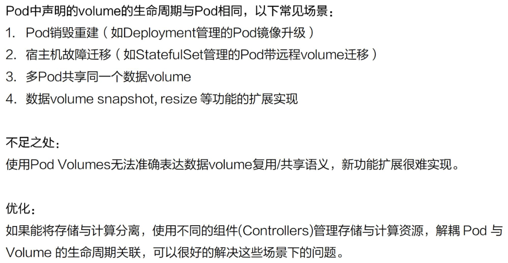
- 场景一：pod 重建销毁，如用 Deployment 管理的 pod，在做镜像升级的过程中，会产生新的 pod并且删除旧的 pod ，那新旧 pod 之间如何复用数据？
- 场景二：宿主机宕机的时候，要把上面的 pod 迁移，这个时候 StatefulSet 管理的 pod，其实已经实现了带卷迁移的语义。这时通过 Pod Volumes 显然是做不到的；
- 场景三：多个 pod 之间，如果想要共享数据，应该如何去声明呢？我们知道，同一个 pod 中多个容器想共享数据，可以借助 Pod Volumes 来解决；当多个 pod 想共享数据时，Pod Volumes 就很难去表达这种语义；
- 场景四：如果要想对数据卷做一些功能扩展性，如：snapshot、resize 这些功能，又应该如何去做呢？
Pod Volumes 的解决方案- Persistent Volumes
将存储和计算分离，通过不同的组件来管理存储资源和计算资源，然后解耦 pod 和 Volume 之间生命周期的关联 。这样，当把 pod 删除之后，它使用的PV仍然存在，还可以被新建的 pod 复用。
Persistent Volumes 的接口描述 PVC
用户在使用持久化存储时，真正关心的问题是：
- 使用的存储是可以被多个node共享还是只能单node独占访问(注意是node level而不是pod level)？
- 只读还是读写访问？ 而不关心，与存储相关的实现细节。 这就使得我们需要抽象一层接口层，屏蔽掉存储实现细节的信息。这就是PVC的来历
为什么需要设计PVC?
-
职责分离。
PVX中只用声明自己需要的存储大小，access mode (单node独占还是多node 共享，只读还是 读写访问？)等业务真正关系的存储需求，PV和其对应的后段存储信息则交给cluster admin 统一运维和管控，安全访问策略更容易控制。 -
PVC简化了User对存储的需求，PV才是存储实际信息的载体
通过kube-controller-manager中的PersistentVolumeController将PVC和合适的PV bound 到一起，从而满足实际的存储需求 -
PVC类似接口，PV类似接口对应的实现
PVC 和 PV的两种Bound 关系
正如前文分析，PV 和PVC 类似实现类和接口的关系，那么在实际中两者的关系就有静态绑定，和动态绑定两种 接下来，分析两种关系。
Static Volume Provisioning (静态Bound)
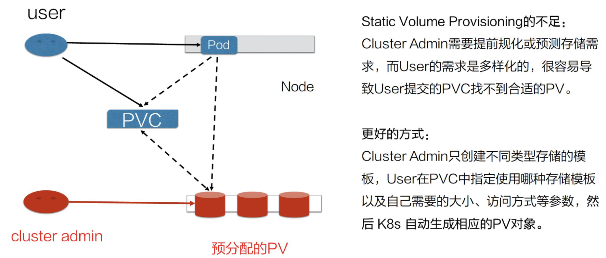
实现过程
- 由集群管理员（cluster admin）事先去规划这个集群中的用户会怎样使用存储，它会先预分配一些存储，也就是预先创建一些 PV；
- 然后用户在提交自己的存储需求（也就是 PVC）的时候，K8s 内部相关组件会帮助它把 PVC 和 PV 做绑定；3. 用户再通过 pod 去使用存储的时候，就可以通过 PVC 找到相应的 PV
静态绑定的方式， 需要先设置好模版，对资源池的划分比较粗糙。
举例：如果用户需要的是 20G，然而集群管理员在分配的时候可能有 80G 、100G 的，但没有 20G的，这样就很
难满足用户的真实需求，也会造成资源浪费
Dynamic Provisioning(动态态Bound)
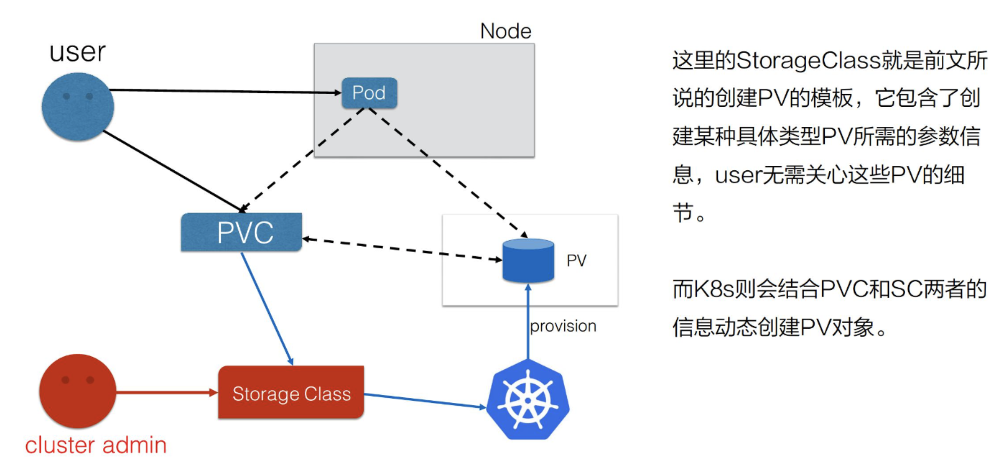
实现过程
-
集群管理员不预先创建PV，而提供模版文件（StorageClass)
StorageClass 表示创建某一类型存储（块存储，文件存储等）所需的一些参数。用户在提交自身存储需求 (PVC)时，在PVC中指定使用的存储模版（StorageClass） -
集群中的管控组件，会结合 PVC 和 StorageClass 的信息, 动态的生成 用户所需的PV，将PVC和PV绑定后，Pod 即可以使用PV了。
通过 StorageClass 配置生成存储所需要的存储模板，再结合用户的需求动态创建 PV 对象，做到按需分 配，在没有增加用户使用难度的同时也解放了集群管理员的运维工作
PVC/PV/StorageClass 基本操作和概念解析
Pod Volumes 使用
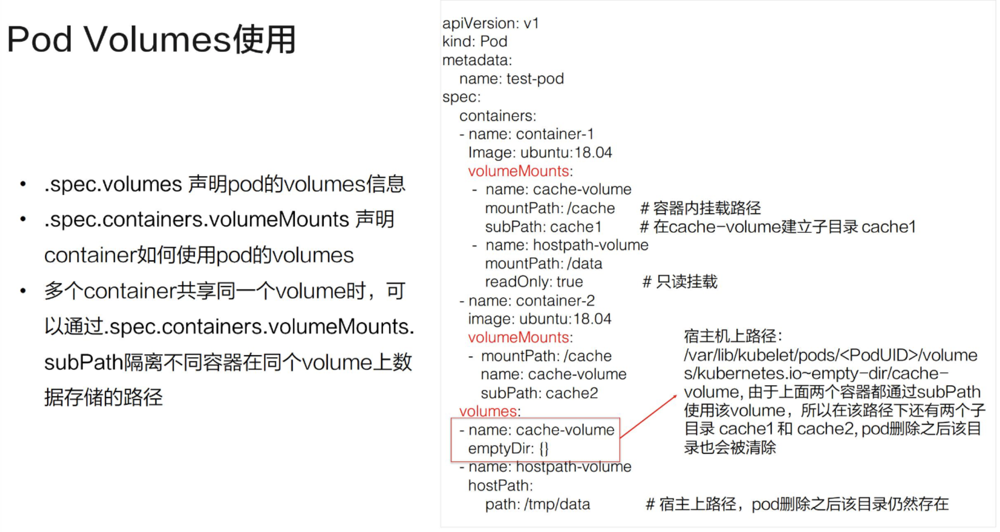
- 通过 .spec.volumes 申明pod 的 volumes 信息
- 通过 .spec.containers.volumesMounts 申明 container 如何使用pod 的volumes 信息
- 通过 .spec.containers.volumesMounts.subPath 隔离不通容器在同一个 volumes上数据存储的路径，实现多个container 共享同一个volumes
Static Volume Provisioning 案例分析
- Cluster Admin & User
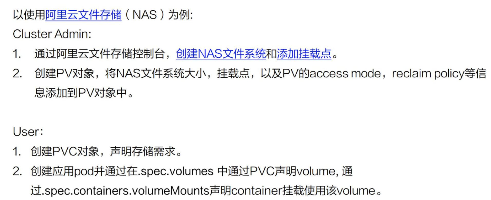
- 管理员配置解析
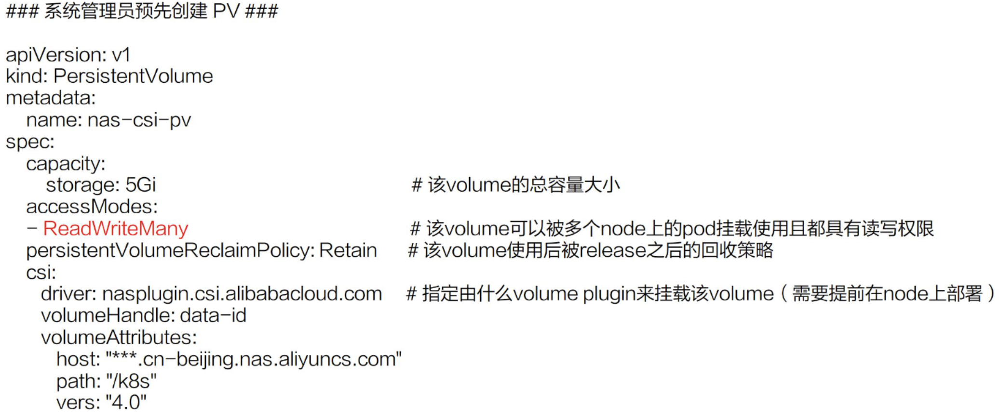
- 用户配置解析
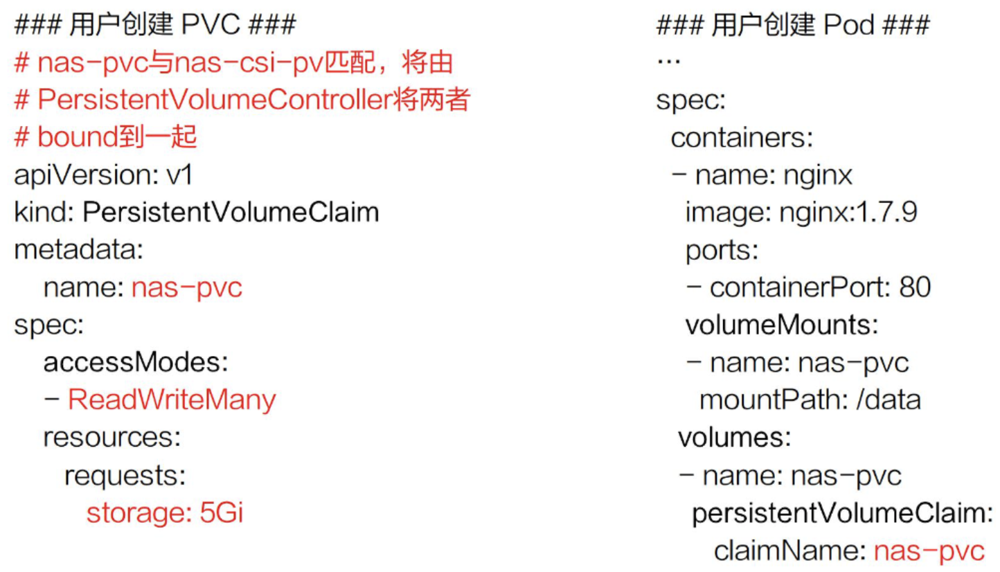
Dynamic Volume Provisioning 案例分析
- 系统管理员
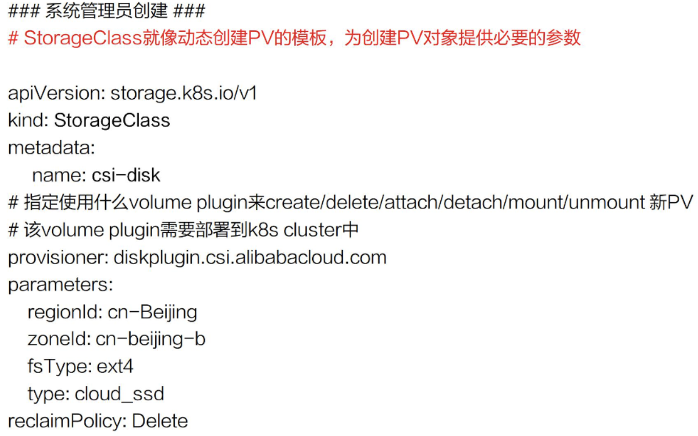
1.1 系统管理员不再预分配 PV，而只是创建一个模板文件 – StorageClass
StorageClass 的信息：
第一：provisioner, 即那个存储插件。
存储插件provisioner对应创建PV的具体实现
第二：参数。
k8s创建存储的时候，需要指定的一些细节参数。如：regionld、zoneld、fsType 和它的类型，
ReclaimPolicy：使用方使用结束、Pod 及 PVC 被删除后，这块 PV 应该怎么处理
- 用户如何用
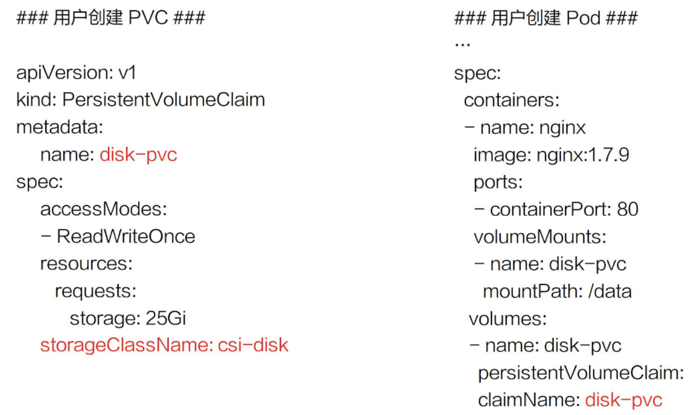
2.1 PVC 新加一个字段-StorageClassName
2.2 用户提交完PVC之后，K8s 集群中的相关组件就会根据PVC以及StorageClass动态生成 PV,并和当前PVC绑定
2.3 之后用户在提交自己的 yaml 时，PVC找到PV，并把它挂载到相应的容器中
PV Spec 重要字段解析
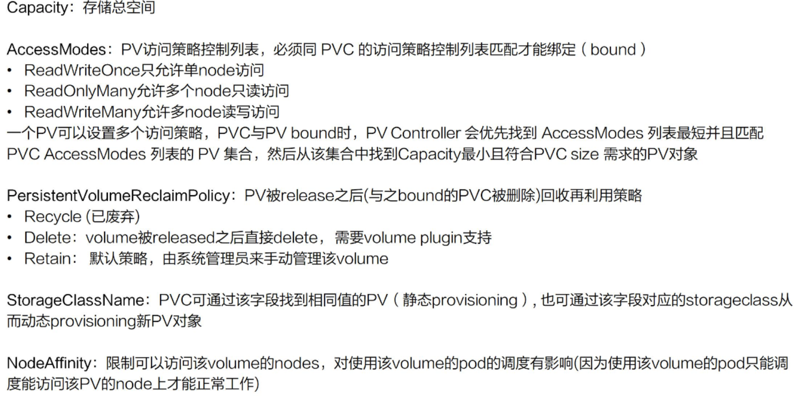
用户在提交PVC的时候,最重要的两个字段 —— Capacity 和 AccessModes。
Capacity: 存储对象的大小； AccessModes : PV三种使用方式: 1. 单 node 读写访问； 2. 多个 node 只读访问，是常见的一种数据的共享方式； 3. 多个 node 上读写访问。
在提交 PVC 后，k8s 集群中的相关组件是如何去找到合适的 PV 呢？
- 首先它是通过为 PV 建立的 AccessModes 索引找到所有能够满足用户的 PVC 里面的 AccessModes 要求的 PV list，
- 然后根据PVC的 Capacity，StorageClassName, Label Selector 进一步筛选 PV，
- 最小适合原则筛选 如果满足条件的 PV 有多个，选择 PV 的 size 最小的，accessmodes 列表最短的 PV
在PV 使用完毕后如何释放回收？
ReclaimPolicy:常见的有二种方式:
- delete: PVC 被删除之后，PV 也会被删除；
- Retain: 就是保留，保留之后，后面这个 PV 需要管理员来手动处理。
StorageClassName：动态 Provisioning 时必须指定的一个字段,来指定到底用哪一个模板文件来生成 PV；
NodeAffinity：创建出来的PV，它能被哪些node去挂载使用， 其实是有限制的。然后通过 NodeAffinity 来声明对node的限制，这样其实对 使用该PV的pod调度也有限制。 pod 必须要调度到这些能访问 PV 的 node 上，才能使用这块 PV
PV 状态图
stateDiagram
CreatePV --> Pending
Pending --> Available
Available --> Bound
Bound --> Released
Released --> Deleted
Released --> Failed
解释：
- 首先在创建PV对象后，它会处在短暂的pending 状态； 等真正的 PV 创建好之后，它就处在 available 状态
- 用户在提交 PVC 之后，被 K8s 相关组件做完 bound（即：找到相应的 PV），这个时候 PV 和 PVC 就结合到一起了，此时两者都处在 bound 状态
- 在使用完 PVC，将其删除后，这个 PV 就处在 released 状态
- 当 PV 已经处在 released 状态下，它是没有办法直接回到 available 状态 想把已经 released 的 PV 复用，有两种方式 4.1 新建一个 PV 对象，然后把之前的 released 的 PV 的相关字段的信息填到新的 PV 对象里面，这样的话，这个 PV 就可以结合新的 PVC 了 4.2 是我们在删除 pod 之后，不要去删除 PVC 对象，这样给 PV 绑定的 PVC 还是存在的，下次 pod 使用的时候，就可以直接通过 PVC 去复用
PVC/PV 设计与实现原理
架构设计
Pod/PV 创建的流程
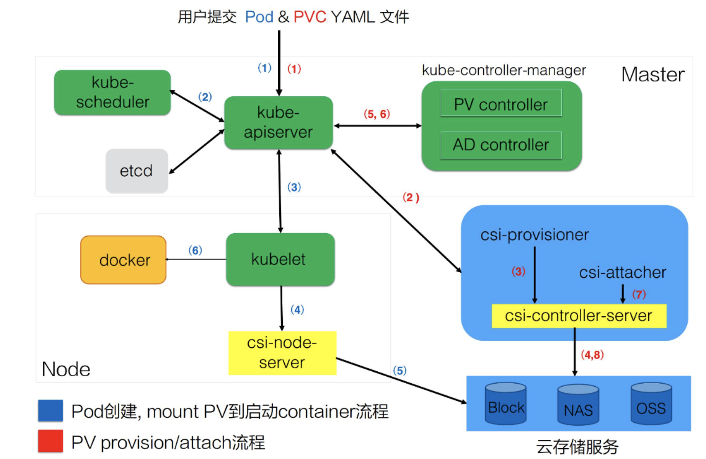
CSI(container storage interface) 的实现可分为两大部分：
- 第一部分是由k8s社区驱动实现的通用的部分，如图中 csi-provisioner和 csi-attacher controller；
- 第二部分由云存储厂商实践的，对接云存储厂商的 OpenApi，主要是实现真正的 create/delete/mount/unmount 存储的相关操作，对应到上图中的csi-controller-server和csi-node-server。
用户提交 yaml 之后，k8s内部的处理流程：
-
用户在提交 PVCyaml 的时候，首先会在集群中生成一个 PVC 对象
-
PVC 对象会被 csi-provisioner controller watch到，csi-provisioner 会结合 PVC 对象以及 PVC 对象中声明的 storageClass，通过 GRPC 调用 csi-controller-server
-
csi-controller-server，然后，到云存储服务这边去创建真正的存储，并最终创建出来 PV 对象
-
由集群中的 PV controller 将 PVC 和 PV 对象做 bound ， PV 就可以被使用了
-
用户在提交 pod 之后,首先会被调度器调度选中某一个合适的node
-
该 node 上面的 kubelet 在创建 pod 流程中会通过首先 csi-node-server 将我们之前创建的 PV 挂载到我们 pod 可以使用的路径
-
kubelet 开始 create && start pod 中的所有 container
PV、PVC 以及通过 csi 使用存储流程
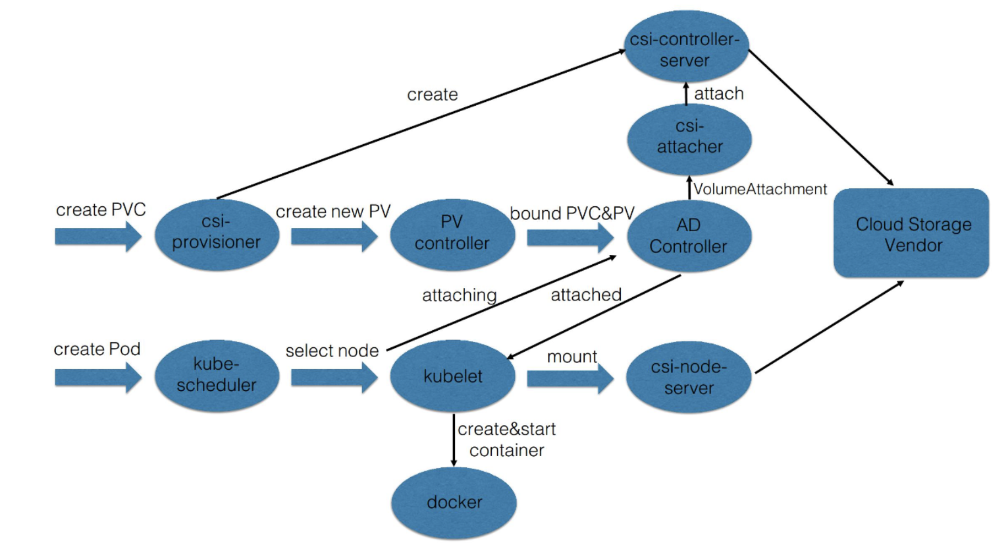
有三个阶段：
第一: create 阶段，主要是创建存储
用户提交完 PVC，由 csi-provisioner 创建存储，并生成 PV 对象，之后 PV controller 将 PVC 及生
成的 PV 对象做 bound
第二: attach 阶段，就是将那块存储挂载到 node 上面(通常为将存储load到node的/dev下面)；
用户在提交 pod yaml 的时候，首先会被调度选中某一个 合适的node，等 pod 的运行 node 被选出来之后，
会被 AD Controller watch 到 pod 选中的 node，它会去查找 pod 中使用了哪些 PV。然后它会生成一
个内部的对象叫 VolumeAttachment 对象，从而去触发 csi-attacher去调用csi-controller-server
去做真正的 attache 操作，attach操作调到云存储厂商OpenAPI。这个 attach 操作就是将存储 attach到
pod 将会运行的 node 上面
第三: mount 阶段，将对应的存储进一步挂载到 pod 可以使用的路径
kubelet 创建 pod的过程中，它在创建 pod 的过程中，首先要去做一个 mount，这里的 mount 操作是为了将
已经attach到这个 node 上面那块盘，进一步 mount 到 pod 可以使用的一个具体路径，之后 kubelet 才
开始创建并启动容器
总结
- 介绍了 K8s Volume 的使用场景，以及本身局限性；
- 通过介绍 K8s 的 PVC 和 PV 体系，说明 K8s 通过 PVC 和 PV 体系增强了 K8s Volumes 在多 Pod 共享/迁移/存储扩展等场景下的能力的必要性以及设计思想；
- 通过介绍 PV（存储）的不同供给模式 (static and dynamic)，学习了如何通过不同方式为集群中的 Pod 供给所需的存储；
- 通过 PVC&PV 在 K8s 中完整的处理流程，深入理解 PVC&PV 的工作原理。